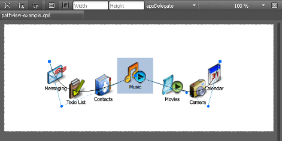

Editing PathView Properties
A Path View lays out data provided by data models on a Path.
A graphical spline editor enables you to specify path view paths, which is a non-trivial task to do in the code editor.

To start editing the path, double-click the path view on the canvas. The editor composes the path of PathCubic path objects. They are cubic Bezier curves to a given position with two control points. Drag and drop the control points to construct the curve.
In addition, PathLine and PathQuad path objects are supported indirectly. To make a curve segment linear, select Make Curve Segment Straight in the context menu.
By default, the path is closed, which means that its start and end points are identical. To create separate start and end points for it, right-click an edit point to open a context menu, and deselect Closed Path.
To add intermediary points to a curve segment, select Split Segment in the context menu.
In the Properties pane, you can specify other properties for the path view. For example, what is the maximum distance from the path that initiates mouse dragging and what is the rate at which a flick will decelerate.